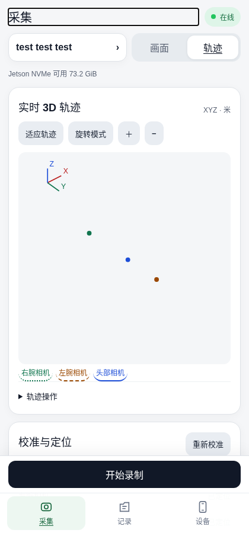
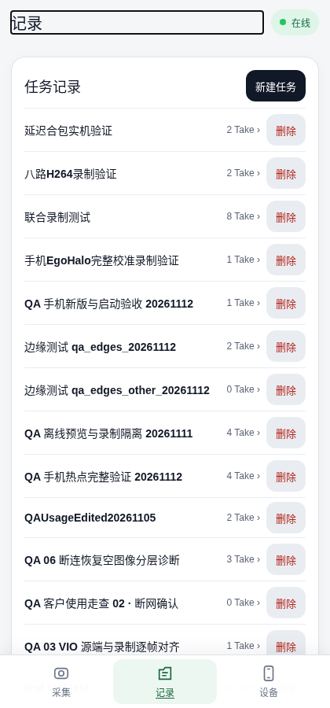
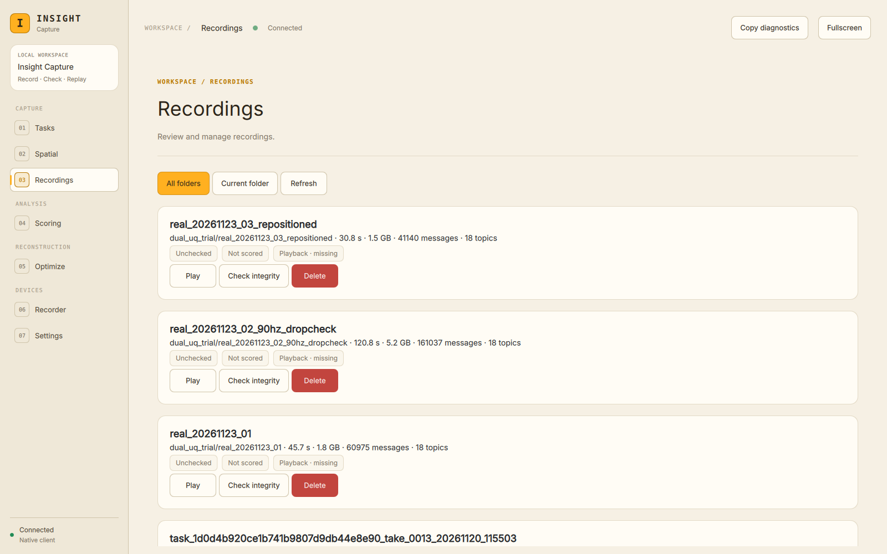
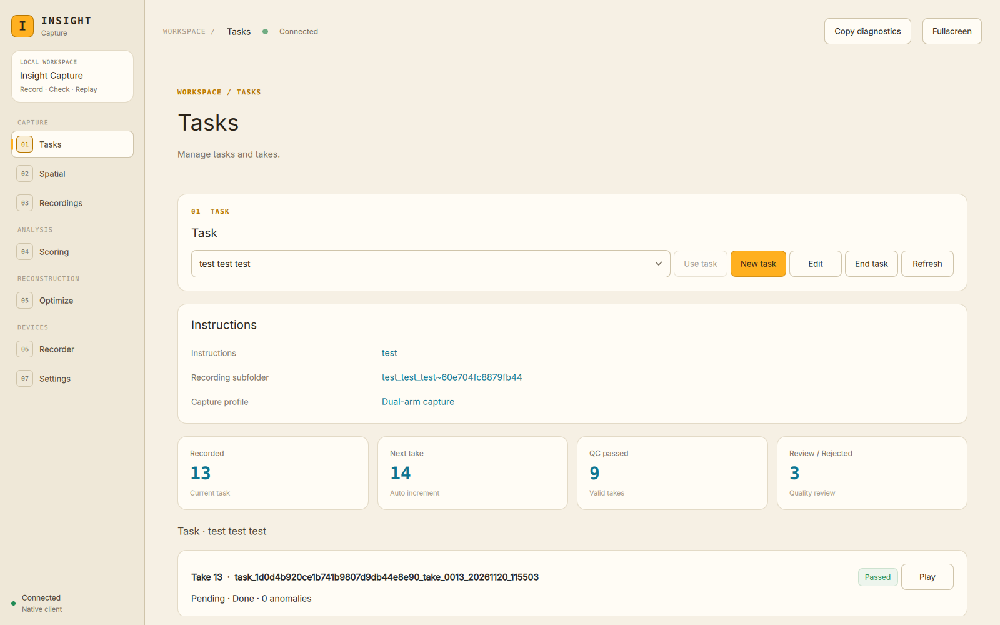
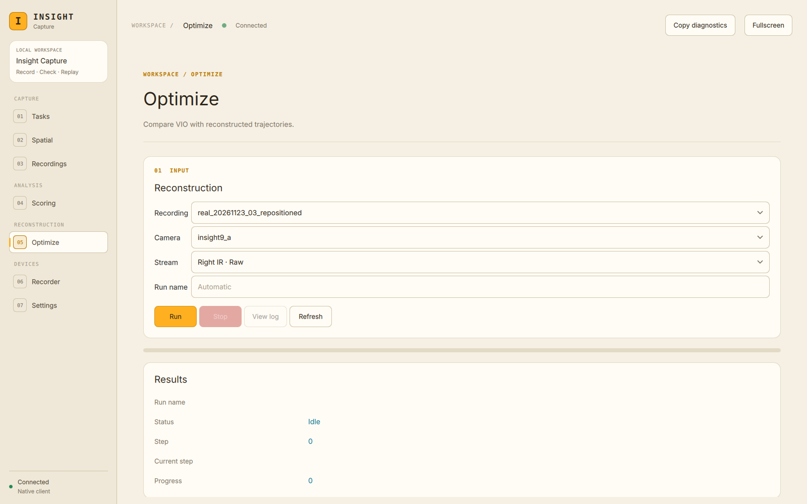

Insight Capture Dashboard
头部和双腕三台相机接入 Jetson，现场用手机监看，事后在原生 Qt 里回放和质检。最费功夫的是让三台相机各自的 VIO 落到同一个坐标系：头部建图，腕部用自己的画面去匹配这张图。
- 做什么
- 头部 + 双腕三相机的同步采集系统，覆盖现场采集、回放、质检和轨迹复查
- 我做的
- 独立开发：Jetson 端采集与定位后端、手机采集页、原生 Qt 桌面客户端
- 技术栈
- ROS 2 · MCAP · SuperGlue · PnP · C++/QML · Qt Quick 3D · GStreamer · Vue · COLMAP
- 实测数据
- 双路原生预览 29.99 / 30.00 FPS；一条双端实录合包 26 个话题、66,698 条消息，逐条与原件核对
- 难点与解决
- 三台相机的 VIO 各有原点和朝向。头部双目建公共地图，腕部用图像匹配加 PnP 定位，过几何门限且最近 5 次中 3 次一致才更新位姿。
- 目前进展
- 地图匹配和坐标链路已在实机接通；定位精度还没有用独立标定观测验收。
采集系统
常用配置是头部 Insight9 加两台腕部 Insight3。头部记录动作所在的环境，双腕保留手边细节。Jetson 接收各路输入，同时供手机预览和 Qt 回放。

- 头部与双腕RGB 或红外图像、深度、IMU 与设备 VIO。
- Jetson · ROS 2按话题接收，保留采集时间戳、坐标变换和任务关联。
- MCAP原始消息与元数据落盘，供 Qt 对照视频、轨迹和质检结果。
另一套配置把头部换成 EgoHalo H1，用它的四路鱼眼、IMU 和 VIO 作为头部输入，Jetson 只接左右腕。两端各自录制原始数据，之后按同一录制编号合成一个 ROS 2 数据包。
多相机空间定位
每台相机都在输出自己的 VIO，但三条轨迹各有独立的原点和朝向。直接把它们画在一起，头和手的相对位置是错的。
我的做法是让头部双目先建一张公共地图，左右腕再用各自的画面去匹配这张图，求出它们在头部坐标系里的位姿。
- 头部建图
- 头部双目生成现场的公共地图，用 SuperPoint/SuperGlue 提取和匹配特征。
- 腕部匹配
- 腕部画面与地图做图像匹配，低置信度对应先剔除，再用 PnP 求位姿。
- 防跳变
- 至少 12 对对应、10 个内点、重投影误差不超过 3 px，且最近 5 次中有 3 次给出一致的解，才切换位姿。


候选解的一致性判断最初放得比较宽，两个相差较大的解可能被算成一簇，导致位姿来回切换。我把候选间差异收紧到 5 cm / 3°，另一个解也有支持时标记为歧义并等待，不降低 PnP 本身的门限。原始 VIO 和原始图像始终原样保存，统一位姿作为单独的数据流。
手机采集界面

- 三路预览
- 同时检查头部与双腕取景，也能单看一路核对近处操作。
- 任务与录制
- 选择任务、启停录制，在记录页按任务查看 Take。
- 设备状态
- 相机就绪、Jetson 存储和时钟同步，开录前一眼判断现场条件。
任务记录与设备状态截图



原生 Qt 回放与质检
桌面端用 C++、QML、Qt Quick 3D 和 GStreamer，没有内嵌网页。多视角回放、空间检查和数据诊断放在同一个客户端里。


- Tasks
- 建立和切换任务，查看各次 Take 的保存状态、质检记录和人工判断。
- Spatial
- 三维视图里查看公共地图与头部、双腕位姿。
- Recorder
- 配置话题和录制目录，确认输入、时钟和存储能否起录。
- Recordings
- 同步时间轴上对照各路视频与轨迹，检查各话题的记录完整性。
- Scoring
- 分别查看各相机的 VIO 轨迹得分和异常区间，结合视频定位问题。
- Optimize
- 按录制、相机和图像流运行 COLMAP，对照重建轨迹与原始 VIO。
- Settings
- 调整腕部定位遮罩，管理后端和设备设置。


Tasks、Spatial、Optimize、Settings 界面






实测记录
双 Insight3 原生预览
两路原生显示 sink 的输出分别为 29.99 和 30.00 FPS。从主机收到预览帧到显示 sink 入口，耗时中位数分别为 5.99 和 5.67 ms。性能记录
一条 EgoHalo 配置的双端实录
- 共同可解码区间
- 32.48 秒
- 合包话题数
- 26
- 逐条核对的消息
- 66,698
合包后的每条消息都与两端原件逐条比对，带 Header 的消息索引时间等于原始采集时间。时序检查发现头部左前相机有三处采集时间戳缺口，这条录制因此被标为质量可疑，而不是因为合包成功就算合格。双端录制说明
局限与下一步
- 定位精度还没验收。实机只证明了地图匹配和坐标链路接通，不能给出毫米级精度或长时间漂移的结论。静止采样很稳，但不同重启后的首次匹配会差出约 1 cm，稳定不等于准确。下一步用固定标定板做独立观测来评估精度。
- 双端录制只验证了一条。32 秒的实录说明存储、编号配对和时间戳合并路径可用，不能代替长时间无丢帧验收。
- 预览延迟只量到 sink 入口。5–6 ms 不含真正上屏的时间，端到端延迟还需要另外测。
团队演示
以下是团队同一套设备上的其他演示，不属于我负责的部分，放在这里作为背景。